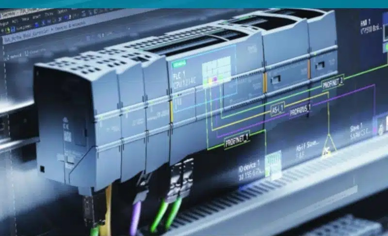

Lo que somos...
Auto-Friar es una división de desarrollo del frigorífico FRIAR.
Aquí, usamos la tecnología para realizar tareas con mayor precisión y poca intervención humana.
Se puede implementar en cualquier sector en el que se lleven a cabo tareas repetitivas.
Sin embargo, es más común en aquellos relacionados con la fabricación o producción
en línea, desplazamiento de mercadería y almacenamientos inteligentes.